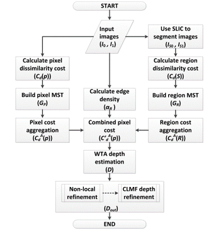
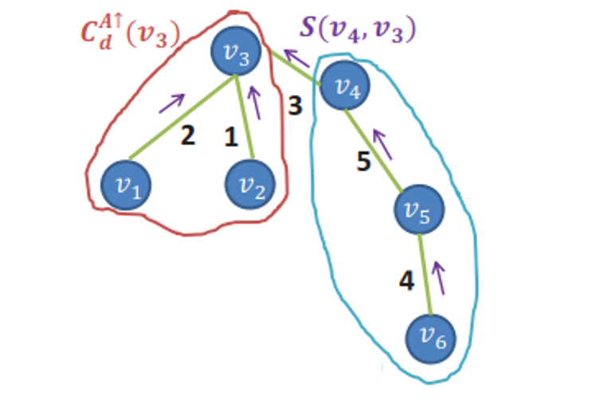

The goal of this project is to build a depth-based refocussing system on MATLAB. The program enables users to arbitrarily select a particular depth to be in focus and suitably adjusts the image to generate the depth of view phenomenon.
This project is broken into two major steps:
- 1. Estimating Depth from stereo images
- 2. Applying blurring kernel using the estimated depth
Stereo images are pairs of images taken from slightly displaced cameras. This has to be done carefully to maintain the epipolar constraint. For this project the stereo images were obtained from the publically available Middlebury Dataset.
To obtain depth from the stero image pair, the two images have to be compared to obtained a per-pixel diparity. From trogonometry, it can be observed that the depth of the object is inversely proportional to the disparity.
The vanilla method to obtain stereo disparity assumes the prior information on the epipolar direction is given and fixed. For a more general procedure, the algorithm employed does not require this prior information. To reduce computation cost and speed up the process, a tree-based comparison has been employed.

This has been done in 2 stages: a pixel level comparison and a region level comparison. To obtain the regions, Simple Linear Iterative Clustering (SLIC) is employed. Cost is calculated as a weighted sum of the difference of intensity and gradient magnitude at a pixel, at a horizontal shift 'd' between the 2 pixels of the left and right image. Classical techniques would require computing this cost for every pixel, for every possible 'd' and then picking the d that minimizes the cost. The tree based approach aggregates this cost, with the underlying assumption that the cost of a distant pixel has little influence on the disparity decision while local pixel cost would influence the decision. Thus a minimum spanning tree is generated using Kruskal's Algorithm. Each brach is exponentially weighted by the spatial separation of the corresponding node region and the cost can be aggregated by 2 passes of the MST
